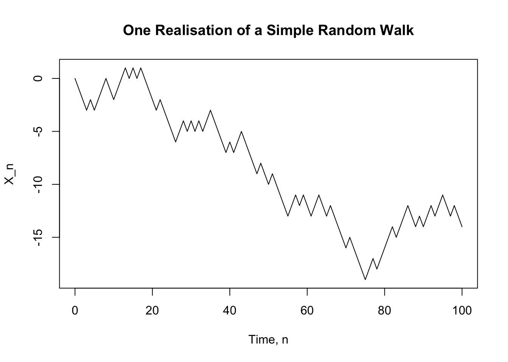
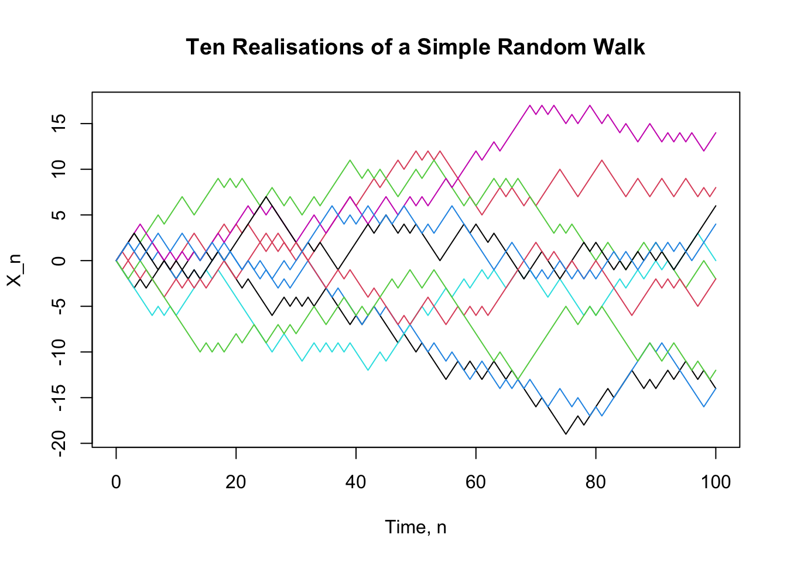
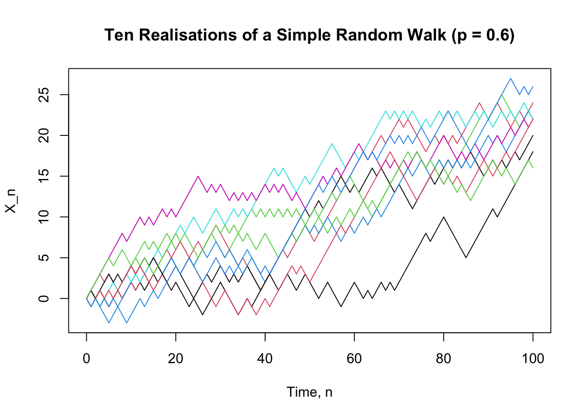

Code
set.seed(123)
n <- 100
Z <- sample(
c(-1, 1),
size = n,
replace = TRUE
)
X <- c(0, cumsum(Z))
plot(
0:n, X,
type = "l",
xlab = "Time, n",
ylab = "X_n",
main = "One Realisation of a Simple Random Walk"
)
After studying this chapter, students should be able to:
One of the simplest examples of a stochastic process is a simple random walk. It provides a natural starting point for studying discrete-time Markov chains because the distribution of the next state depends only on the current state.
Consider a simple model of the price of a stock, measured in baht. Suppose that, at the end of each trading day, the stock price either increases by 1 baht with probability \(p\) or decreases by 1 baht with probability \(q=1-p\). Let \(X_n\) denote the stock price after \(n\) trading days, with initial value
\[ X_0=a. \]
Thus,
\[ X_n=X_{n-1}+Z_n, \]
where the random change \(Z_n\) is given by
\[ Z_n= \begin{cases} 1, & \text{with probability }p,\\ -1, & \text{with probability }q=1-p. \end{cases} \]
Equivalently,
\[ X_n=a+\sum_{i=1}^n Z_i. \]
This process is called a simple random walk.
The time index is discrete, \(n=0,1,2,\ldots\), and the state space is also discrete. A realisation of the process is a sequence of values
\[ X_0,X_1,X_2,\ldots \]
obtained from one particular sequence of random changes \(Z_1,Z_2,\ldots\). Such a sequence is called a sample path.
For example, if \(X_0=100\) and the successive changes are
\[ +1,\quad -1,\quad +1,\quad +1,\quad -1, \]
then the corresponding sample path is
\[ 100,\quad 101,\quad 100,\quad 101,\quad 102,\quad 101. \]
Different sequences of random changes produce different sample paths. The random walk therefore describes a collection of possible paths rather than a single deterministic sequence.
The random variables \(Z_1,Z_2,\ldots\) are assumed to be independent and identically distributed. In particular,
\[ \Pr(Z_i=1)=p, \qquad \Pr(Z_i=-1)=q=1-p. \]
The expected value and variance of each random change are
\[ \begin{aligned} \mu &=\mathrm{E}[Z_i]\\ &=p-q\\ &=2p-1, \end{aligned} \]
and
\[ \begin{aligned} \sigma^2 &=\mathrm{Var}(Z_i)\\ &=\mathrm{E}[Z_i^2]-{\mathrm{E}[Z_i]}^2\\ &=1-(p-q)^2\\ &=4pq. \end{aligned} \]
When \(p=\frac12\), the upward and downward movements have equal probability. The random walk is then called a symmetric random walk. In this case,
\[ \mathrm{E}[Z_i]=0, \qquad \mathrm{Var}(Z_i)=1. \]
Since
\[ X_n=a+\sum_{i=1}^n Z_i, \]
the expectation of the process at time \(n\) is
\[ \begin{aligned} \mathrm{E}[X_n] &=a+\sum_{i=1}^n\mathrm{E}[Z_i]\\ &=a+n(p-q). \end{aligned} \]
Similarly, since the \(Z_i\) are independent,
\[ \begin{aligned} \mathrm{Var}(X_n) &=\mathrm{Var}\left(\sum_{i=1}^n Z_i\right)\\ &=\sum_{i=1}^n\mathrm{Var}(Z_i)\\ &=4npq. \end{aligned} \]
Thus,
\[ \boxed{ \mathrm{E}[X_n]=a+n(p-q), \qquad \mathrm{Var}(X_n)=4npq. } \]
In particular, for a symmetric random walk,
\[ \mathrm{E}[X_n]=a, \qquad \mathrm{Var}(X_n)=n. \]
The variance increases with time, reflecting the increasing uncertainty about the position of the random walk.
Suppose that \(X_0=100\). Consider the probability
\[ \Pr(X_2=98,X_5=99\mid X_0=100). \]
For \(X_2=98\), the process must decrease on both of the first two steps. This has probability
\[ q^2. \]
Starting from \(X_2=98\), we need to reach \(X_5=99\) after three further steps. The net change must therefore be \(+1\). This requires two upward steps and one downward step. There are
\[ {3\choose2}=3 \]
possible orders for these three steps, and each has probability \(p^2q\). Hence,
\[ \begin{aligned} \Pr(X_2=98,X_5=99\mid X_0=100) &=q^2{3\choose2}p^2q\\ &=3p^2q^3. \end{aligned} \]
This example illustrates an important feature of the random walk: probabilities concerning future states can be calculated by considering the sequence of random changes between the relevant time points.
The random walk has many possible sample paths. Simulation provides a simple way to visualise these paths and to see how the behaviour of the process changes across different realisations.
For simplicity, consider a symmetric random walk with
\[ p=q=\frac12 \]
and initial value \(X_0=0\). At each step, the process moves one unit upward or downward with equal probability.
A single realisation can be simulated by generating independent random variables
\[ Z_1,Z_2,\ldots,Z_n, \]
where
\[ Z_i= \begin{cases} 1, & \text{with probability }1/2,\\ -1, & \text{with probability }1/2. \end{cases} \]
The corresponding sample path is then obtained from
\[ X_n=\sum_{i=1}^n Z_i. \]
The following R code generates and plots one realisation of a symmetric random walk over 100 steps.
set.seed(123)
n <- 100
Z <- sample(
c(-1, 1),
size = n,
replace = TRUE
)
X <- c(0, cumsum(Z))
plot(
0:n, X,
type = "l",
xlab = "Time, n",
ylab = "X_n",
main = "One Realisation of a Simple Random Walk"
)
The first value of X is \(X_0=0\). The function cumsum() then calculates the cumulative sum of the successive changes, giving
\[ X_1,X_2,\ldots,X_n. \]
The resulting graph is one possible sample path of the random walk. A different sequence of random changes produces a different path.
The use of set.seed() makes the simulation reproducible. In particular, another user running the same code with the same seed obtains the same realisation.
A single sample path does not show the full range of possible behaviour. We can simulate several independent realisations and plot them together.
set.seed(123)
n <- 100
m <- 10
X <- matrix(0, nrow = n + 1, ncol = m)
for (j in 1:m) {
Z <- sample(
c(-1, 1),
size = n,
replace = TRUE
)
X[, j] <- c(0, cumsum(Z))
}
matplot(
0:n, X,
type = "l",
lty = 1,
xlab = "Time, n",
ylab = "X_n",
main = "Ten Realisations of a Simple Random Walk"
)
Each line represents one realisation of the same stochastic process. All paths start at \(X_0=0\), but they evolve differently because the random changes are different.
Some paths may move substantially above zero, while others may move below zero. Some may return to zero many times. This variation is a consequence of the randomness in the process.
The simulation also illustrates an important distinction:
Thus, the lines in the figure are not different stochastic processes. They are different realisations of the same simple random walk.
The same simulation can be used when the probabilities of upward and downward movements are unequal. Suppose
\[ p=\Pr(Z_i=1)=0.6, \qquad q=\Pr(Z_i=-1)=0.4. \]
The random walk now has a positive expected increment,
\[ \mathrm{E}[Z_i]=p-q=0.2. \]
Consequently,
\[ \mathrm{E}[X_n]=0.2n \]
when \(X_0=0\). We can simulate several realisations as follows.
set.seed(123)
n <- 100
m <- 10
p <- 0.6
X <- matrix(0, nrow = n + 1, ncol = m)
for (j in 1:m) {
Z <- ifelse(
runif(n) < p,
1,
-1
)
X[, j] <- c(0, cumsum(Z))
}
matplot(
0:n, X,
type = "l",
lty = 1,
xlab = "Time, n",
ylab = "X_n",
main = "Ten Realisations of a Simple Random Walk (p = 0.6)"
)
Compared with the symmetric case, the paths tend to move upward over time. This does not mean that every realisation increases at every step. A particular path can still move downward for several consecutive steps. The positive value of \(\mathrm{E}[Z_i]\) describes the average direction of the process across repeated realisations.
Simulation therefore gives a useful visual interpretation of the quantities
\[ \mathrm{E}[X_n] \quad\text{and}\quad \mathrm{Var}(X_n), \]
while the mathematical results describe these features exactly.
Suppose that \(X_0=0\). After \(n\) steps, let \(A\) be the number of upward steps and \(B\) the number of downward steps. Then
\[ A+B=n \]
and
\[ X_n=A-B. \]
For example, after \(2n\) steps, the random walk can only be at an even integer. If
\[ X_{2n}=2m, \]
then
\[ A-B=2m, \qquad A+B=2n. \]
Solving these equations gives
\[ A=n+m, \qquad B=n-m. \]
Since \(A\) has a binomial distribution with parameters \(2n\) and \(p\),
\[ \Pr(X_{2n}=2m) ={2n\choose n+m}p^{n+m}q^{n-m}, \qquad -n\leq m\leq n. \]
Similarly, after \(2n+1\) steps, the random walk can only be at an odd integer. For \(-n-1\leq m\leq n\),
\[ \Pr(X_{2n+1}=2m+1) ={2n+1\choose n+m+1} p^{n+m+1}q^{n-m}. \]
These results show that the distribution of the random walk can be obtained from the binomial distribution.
Consider the random walk at time \(n\). Once the current value \(X_n\) is known, the distribution of the next value \(X_{n+1}\) is determined by
\[ \Pr(X_{n+1}=X_n+1\mid X_n)=p \]
and
\[ \Pr(X_{n+1}=X_n-1\mid X_n)=q. \]
The earlier values
\[ X_0,X_1,\ldots,X_{n-1} \]
do not affect these probabilities once \(X_n\) is known.
For example, suppose that \(X_n=100\). Regardless of how the process arrived at 100, the probability that the next value is 101 is \(p\), while the probability that the next value is 99 is \(q\).
This property is the central idea behind a Markov chain. The random walk provides a simple example in which the future behaviour of the process depends on the present state, while the past is irrelevant once the present state is known. We formalise this idea in the next section.
Consider again the simple random walk model for the stock price. Suppose that the stock prices over the first four days are
\[ (X_0,X_1,X_2,X_3)=(100,99,98,99). \]
We want to determine the distribution of the stock price \(X_4\).
For the simple random walk, the price changes by \(1\) with probability \(p\) and by \(-1\) with probability \(q=1-p\). Since \(X_3=99\),
\[ \Pr(X_4=100\mid X_3=99)=p \]
and
\[ \Pr(X_4=98\mid X_3=99)=q. \]
The important point is that these probabilities do not depend on how the process arrived at \(X_3=99\). In particular,
\[ \Pr(X_4=j\mid X_0=100,X_1=99,X_2=98,X_3=99) =\Pr(X_4=j\mid X_3=99). \]
Thus, once the current state \(X_3\) is known, the earlier values \(X_0,X_1,X_2\) provide no additional information about the distribution of the next state.
This property is the key idea behind a Markov chain.
A stochastic process has the Markov property if, given its current state, the past does not provide additional information about its future evolution.
Let \({X_n:n=0,1,2,\ldots}\) be a discrete-time stochastic process. The process has the Markov property if, for every \(n\),
\[ \Pr(X_{n+1}=j\mid X_0=i_0,\ldots,X_{n-1}=i_{n-1},X_n=i) =\Pr(X_{n+1}=j\mid X_n=i), \]
whenever the conditional probabilities are defined.
The left-hand side uses the entire history of the process up to time \(n\). The right-hand side uses only the current state \(X_n=i\).
The Markov property can therefore be expressed informally as
\[ \boxed{\text{past} \longrightarrow \text{current state} \longrightarrow \text{future}.} \]
The current state contains all the information from the past that is relevant for predicting the next state.
The Markov property also extends to the whole future of the process. Given the current state \(X_n\), the future
\[ X_{n+1},X_{n+2},\ldots \]
is conditionally independent of the past
\[ X_0,X_1,\ldots,X_{n-1}. \]
For example, for a set of possible future states,
\[ \begin{aligned} &\Pr(X_{n+1}=i_{n+1},\ldots,X_{n+m}=i_{n+m}\mid X_0=i_0,\ldots,X_n=i_n)\\ &= \Pr(X_{n+1}=i_{n+1},\ldots,X_{n+m}=i_{n+m}\mid X_n=i_n). \end{aligned} \]
This means that once \(X_n\) is known, the particular path taken to reach \(X_n\) does not affect the conditional distribution of the future.
Example 3.1 (Simple random walk) The simple random walk has the Markov property.
Suppose that \(X_n=i\). The next state can only be \(i+1\) or \(i-1\), with probabilities \(p\) and \(q=1-p\), respectively. Hence,
\[ \Pr(X_{n+1}=j\mid X_n=i)= \begin{cases} p, & j=i+1,\\ q, & j=i-1,\\ 0, & \text{otherwise}. \end{cases} \]
These probabilities depend only on the current state \(i\) and do not depend on the earlier states \(X_0,\ldots,X_{n-1}\). Therefore, the simple random walk satisfies the Markov property.
The Markov property does not mean that successive values of the process are independent. In fact, \(X_{n+1}\) generally depends on \(X_n\). The property states that, for predicting the future, the current state contains the information from the past that is relevant to the future.
A discrete-time Markov chain is a discrete-time stochastic process that satisfies the Markov property.
Let
\[ {X_n:n=0,1,2,\ldots} \]
be a stochastic process with state space \(S\). The process is a discrete-time Markov chain if
\[ \boxed{ \Pr(X_{n+1}=j\mid X_n=i,X_{n-1}=i_{n-1},\ldots,X_0=i_0) =\Pr(X_{n+1}=j\mid X_n=i) } \]
for every \(n\geq 0\) and all states for which the conditional probabilities are defined.
The state space \(S\) is the set of all possible values that the process can take. In many applications considered in this chapter, \(S\) is finite or countably infinite. For example,
\[ S\subseteq{0,1,2,\ldots}. \]
The simple random walk has state space
\[ S=\mathbb{Z} \]
when there are no boundaries, because the process can take any integer value.
The Markov property can be understood by comparing two conditional probabilities.
Suppose that the current state is \(i\). We can ask for the probability that the next state is \(j\):
\[ \Pr(X_{n+1}=j\mid X_n=i). \]
We could instead condition on the entire history,
\[ X_0=i_0,\ldots,X_{n-1}=i_{n-1},X_n=i. \]
For a Markov chain, the answer is the same:
\[ \Pr(X_{n+1}=j\mid X_0=i_0,\ldots,X_n=i) =\Pr(X_{n+1}=j\mid X_n=i). \]
Thus, the complete history can be replaced by the current state when determining the distribution of the next state.
For a discrete-time Markov chain,
\[ \boxed{ \text{distribution of the next state} =\text{a function of the current state only}. } \]
The process may depend on its past through the current state, but the past has no further effect once the current state is known.
The simple random walk is one example of a discrete-time Markov chain. Many actuarial models can also be formulated in this way.
For example, consider a no-claim discount (NCD) system. Let \(X_n\) denote the discount level of a policyholder after \(n\) policy years. Suppose the state space is
\[ S={0,1,2}, \]
where the states correspond to discount levels of \(0%\), \(20%\), and \(40%\).
Suppose that a claim-free year moves the policyholder up one level, unless the maximum level has already been reached, while a year with at least one claim moves the policyholder down one level, unless the policyholder is already at level \(0\).
If the probability of a claim-free year is \(p\) and is independent of the policy year, then the probability of the next discount level depends only on the current discount level. For example, if \(X_n=1\), then
\[ \Pr(X_{n+1}=0\mid X_n=1)=1-p \]
and
\[ \Pr(X_{n+1}=2\mid X_n=1)=p. \]
The previous discount levels \(X_0,\ldots,X_{n-1}\) do not affect these probabilities once \(X_n\) is known. Therefore, the NCD system is a discrete-time Markov chain.
The simple random walk and the NCD system have very different interpretations, but they share the same mathematical structure. In both cases, the current state is sufficient for determining the conditional distribution of the next state.
The next step is to describe these conditional probabilities systematically. This leads to the concept of one-step transition probabilities and their representation by a transition probability matrix.

The Markov property tells us that, given the current state, the past does not provide additional information about the next state. We can therefore describe the one-step evolution of a Markov chain by specifying the probability of moving from each current state to each possible next state.
Let \({X_n:n=0,1,2,\ldots}\) be a discrete-time Markov chain with state space \(S\). The one-step transition probability from state \(i\) to state \(j\) at time \(n\) is
\[ p_{ij}^{(n,n+1)} =\Pr(X_{n+1}=j\mid X_n=i), \qquad i,j\in S. \]
The notation \(p_{ij}^{(n,n+1)}\) indicates that the transition is from state \(i\) at time \(n\) to state \(j\) at time \(n+1\).
For a fixed current state \(i\), the collection
\[ \left\{p_{ij}^{(n,n+1)}:j\in S\right\}, \qquad p_{ij}^{(n,n+1)} = \Pr(X_{n+1}=j\mid X_n=i). \]
describes the probability distribution of the next state given that the current state is \(i\).
Therefore,
\[ 0\leq p_{ij}^{(n,n+1)}\leq 1 \]
and
\[ \sum_{j\in S}p_{ij}^{(n,n+1)}=1. \]
The probabilities in a given row must sum to one because the process must move to one of the states in \(S\) at the next time point.
The quantity
\[ p_{ij}^{(n,n+1)} =\Pr(X_{n+1}=j\mid X_n=i) \]
is the probability that the chain moves from state \(i\) to state \(j\) in one time step.
The first subscript is the current state and the second subscript is the next state.
Consider a simple random walk with
\[ \Pr(Z_n=1)=p, \qquad \Pr(Z_n=-1)=q=1-p. \]
If \(X_n=i\), then the next state is either \(i+1\) or \(i-1\). Hence,
\[ p_{ij}^{(n,n+1)} =\begin{cases} p, & j=i+1,\\ q, & j=i-1,\\ 0, & \text{otherwise}. \end{cases} \]
For example,
\[ \Pr(X_{n+1}=6\mid X_n=5)=p \]
and
\[ \Pr(X_{n+1}=4\mid X_n=5)=q. \]
The probabilities do not depend on \(n\) because the rules governing the random walk are the same at every time point.
This leads to the important special case of a time-homogeneous Markov chain.
A Markov chain is time-homogeneous if the one-step transition probabilities do not depend on the time at which the transition occurs. That is,
\[ \Pr(X_{n+1}=j\mid X_n=i) =\Pr(X_1=j\mid X_0=i) \]
for all \(n\geq 0\) and \(i,j\in S\).
In this case, we write
\[ p_{ij} =\Pr(X_{n+1}=j\mid X_n=i). \]
The transition probability is therefore determined entirely by the current state \(i\) and the next state \(j\).
If the transition probabilities depend on \(n\), the chain is called time-inhomogeneous or non-homogeneous.
Unless stated otherwise, we will assume that Markov chains are time-homogeneous.
For a time-homogeneous Markov chain,
\[ \Pr(X_{n+1}=j\mid X_n=i)=p_{ij} \]
is the same at every time \(n\).
For a time-inhomogeneous Markov chain, the corresponding probability can change with time:
\[ \Pr(X_{n+1}=j\mid X_n=i)=p_{ij}^{(n,n+1)}. \]
For a time-homogeneous Markov chain, all one-step transition probabilities can be collected into a matrix.
The transition probability matrix, denoted by \(P\), is the matrix whose \((i,j)\)-th entry is
\[ p_{ij}=\Pr(X_{n+1}=j\mid X_n=i). \]
Thus,
\[ P=(p_{ij})_{i,j\in S}. \]
For a finite state space \(S={1,2,\ldots,d}\),
\[ P= \begin{pmatrix} p_{11} & p_{12} & \cdots & p_{1d}\\ p_{21} & p_{22} & \cdots & p_{2d}\\ \vdots & \vdots & \ddots & \vdots\\ p_{d1} & p_{d2} & \cdots & p_{dd} \end{pmatrix}. \]
The rows correspond to the current state and the columns correspond to the next state.
For example, the entry \(p_{23}\) is the probability of moving from state \(2\) to state \(3\) in one time step:
\[ p_{23}=\Pr(X_{n+1}=3\mid X_n=2). \]
Since each row gives a probability distribution over the possible next states,
\[ p_{ij}\geq 0 \]
and
\[ \sum_{j\in S}p_{ij}=1 \]
for every \(i\in S\).
A matrix satisfying these two properties is called a stochastic matrix.
For a time-homogeneous Markov chain,
\[ \boxed{ P=(p_{ij}),\qquad p_{ij}=\Pr(X_{n+1}=j\mid X_n=i). } \]
Each row of \(P\) describes the probability distribution of the next state given the current state.
Consider the NCD system introduced earlier, with state space
\[ S={0,1,2}, \]
where the states correspond to discount levels of \(0%\), \(20%\), and \(40%\).
Suppose that the probability of a claim-free year is \(p\) and the probability of at least one claim is \(1-p\). The rules are:
The transition probabilities are therefore
\[ \begin{aligned} p_{00}&=1-p, & p_{01}&=p, & p_{02}&=0,\\ p_{10}&=1-p, & p_{11}&=0, & p_{12}&=p,\\ p_{20}&=0, & p_{21}&=1-p, & p_{22}&=p. \end{aligned} \]
Hence, the transition matrix is
\[ P= \begin{pmatrix} 1-p & p & 0\\ 1-p & 0 & p\\ 0 & 1-p & p \end{pmatrix}. \]

For example, the second row gives the probabilities of the next NCD level when the current level is \(1\):
\[ \Pr(X_{n+1}=0\mid X_n=1)=1-p, \]
\[ \Pr(X_{n+1}=1\mid X_n=1)=0, \]
and
\[ \Pr(X_{n+1}=2\mid X_n=1)=p. \]
The row sums to one:
\[ (1-p)+0+p=1. \]
The transition matrix provides a compact representation of the rules governing the NCD system. Once the current state is known, the corresponding row of \(P\) gives the probability distribution of the next state.
Consider a health insurance system in which a policyholder is classified at the end of each day as Healthy, Sick, or Dead. Let
\[ S={H,S,D}. \]
Suppose the transition probability matrix is
\[ P= \begin{pmatrix} p_{HH} & p_{HS} & p_{HD}\\ p_{SH} & p_{SS} & p_{SD}\\ 0 & 0 & 1 \end{pmatrix}. \]

The entry
\[ p_{HS} =\Pr(X_{n+1}=S\mid X_n=H) \]
is the probability that a healthy policyholder becomes sick during the next day.
Similarly,
\[ p_{HD} =\Pr(X_{n+1}=D\mid X_n=H) \]
is the probability that a healthy policyholder dies during the next day.
The last row is
\[ (0,0,1), \]
which means that once the process enters state \(D\), it remains there. Thus, \(D\) is an absorbing state.
We will return to absorbing states and their properties later in the chapter.
The transition matrix gives a complete description of the one-step behaviour of a time-homogeneous Markov chain. For a finite state space, instead of specifying each conditional probability separately, we can work with the single matrix \(P\).
For example, if the current state is known to be \(i\), then the \(i\)-th row of \(P\) gives
\[ \Pr(X_{n+1}=j\mid X_n=i), \qquad j\in S. \]
This matrix representation also allows us to study transitions over several time steps using matrix multiplication. The next section develops this idea through \(n\)-step transition probabilities and the Chapman–Kolmogorov equation.
The transition matrix \(P\) describes how a Markov chain moves from one state to another in one time step. In many applications, however, we are interested in what happens over several time steps.
For example, in the NCD system, we may want to know the probability that a policyholder currently at discount level \(1\) will be at discount level \(2\) three years from now. This is a three-step transition probability.
Let \(\{X_n:n=0,1,2,\ldots\}\) be a time-homogeneous Markov chain with state space \(S\). The \(n\)-step transition probability from state \(i\) to state \(j\) is
\[ p_{ij}^{(n)} = \Pr(X_{m+n}=j\mid X_m=i). \]
For a time-homogeneous Markov chain, this probability does not depend on the starting time \(m\). Thus, we can equivalently write
\[ p_{ij}^{(n)} = \Pr(X_n=j\mid X_0=i). \]
The superscript \((n)\) indicates the number of transitions, not a power of the probability \(p_{ij}\).
In particular,
\[ p_{ij}^{(1)} = \Pr(X_{n+1}=j\mid X_n=i) = p_{ij}. \]
Thus, the one-step transition probabilities are the special case \(n=1\).
The quantity
\[ p_{ij}^{(n)} = \Pr(X_{m+n}=j\mid X_m=i) \]
is the probability that the chain is in state \(j\) \(n\) steps after starting in state \(i\).
Suppose that the chain starts in state \(i\) and we want to calculate the probability that it is in state \(j\) after two steps.
The chain must be in some state \(k\) after the first step. Therefore, we consider all possible intermediate states \(k\in S\).
For a particular intermediate state \(k\),
\[ \Pr(X_2=j\mid X_0=i,X_1=k) = \Pr(X_2=j\mid X_1=k) = p_{kj}, \]
by the Markov property.
Also,
\[ \Pr(X_1=k\mid X_0=i)=p_{ik}. \]
Therefore,
\[ \begin{aligned} \Pr(X_2=j\mid X_0=i) &= \sum_{k\in S} \Pr(X_2=j,X_1=k\mid X_0=i)\\ &= \sum_{k\in S} \Pr(X_2=j\mid X_1=k,X_0=i) \Pr(X_1=k\mid X_0=i)\\ &= \sum_{k\in S} p_{kj}p_{ik}. \end{aligned} \]
Hence,
\[ \boxed{ p_{ij}^{(2)} = \sum_{k\in S}p_{ik}p_{kj}. } \]
The two-step transition probability is therefore obtained by considering all possible intermediate states and adding the probabilities of the corresponding two-step paths.
Consider the NCD system with transition matrix
\[ P= \begin{pmatrix} 1-p & p & 0\\ 1-p & 0 & p\\ 0 & 1-p & p \end{pmatrix}. \]
Suppose that the policyholder is currently in state \(1\). To find the probability of being in state \(2\) two years later, there are two possible intermediate states.
The chain can move
\[ 1\longrightarrow 0\longrightarrow 2 \]
or
\[ 1\longrightarrow 2\longrightarrow 2. \]
Therefore,
\[ \begin{aligned} p_{12}^{(2)} &= p_{10}p_{02}+p_{12}p_{22}\\ &= (1-p)(0)+p(p)\\ &= p^2. \end{aligned} \]
Thus,
\[ \Pr(X_{n+2}=2\mid X_n=1)=p^2. \]
This calculation illustrates the general principle: to calculate a multi-step transition probability, consider all possible paths through the intermediate states.
The same argument can be extended to an arbitrary number of steps.
Suppose that the chain starts in state \(i\) and we want to find the probability of reaching state \(j\) after \(n\) steps. Choose an intermediate time \(l\), where
\[ 0<l<n. \]
At time \(l\), the chain must be in some state \(k\in S\). We can therefore divide the journey into two parts:
\[ i \overset{l\text{ steps}}{\longrightarrow} k \overset{n-l\text{ steps}}{\longrightarrow} j. \]
For a particular intermediate state \(k\),
\[ \Pr(X_l=k\mid X_0=i)=p_{ik}^{(l)} \]
and, by the Markov property,
\[ \Pr(X_n=j\mid X_l=k,X_0=i) = \Pr(X_n=j\mid X_l=k) = p_{kj}^{(n-l)}. \]
Summing over all possible intermediate states gives
\[ \boxed{ p_{ij}^{(n)} = \sum_{k\in S} p_{ik}^{(l)}p_{kj}^{(n-l)}, \qquad 0<l<n. } \]
This is the Chapman–Kolmogorov equation.

Starting from the definition of the \(n\)-step transition probability,
\[ p_{ij}^{(n)} = \Pr(X_n=j\mid X_0=i), \]
we partition the event according to the state occupied at time \(l\):
\[ \begin{aligned} p_{ij}^{(n)} &= \sum_{k\in S} \Pr(X_n=j,X_l=k\mid X_0=i)\\ &= \sum_{k\in S} \Pr(X_n=j\mid X_l=k,X_0=i) \Pr(X_l=k\mid X_0=i)\\ &= \sum_{k\in S} \Pr(X_n=j\mid X_l=k) \Pr(X_l=k\mid X_0=i)\\ &= \sum_{k\in S} p_{kj}^{(n-l)}p_{ik}^{(l)}. \end{aligned} \]
Hence,
\[ \boxed{ p_{ij}^{(n)} = \sum_{k\in S} p_{ik}^{(l)}p_{kj}^{(n-l)}. } \]
The equation states that an \(n\)-step transition can be decomposed into an \(l\)-step transition followed by an \((n-l)\)-step transition.
For a time-homogeneous Markov chain,
\[ \boxed{ p_{ij}^{(n)} = \sum_{k\in S} p_{ik}^{(l)}p_{kj}^{(n-l)}, \qquad 0<l<n. } \]
The intermediate state \(k\) is summed over all possible states of the chain at the intermediate time.
The Chapman–Kolmogorov equation has a simple matrix interpretation.
Let
\[ P^{(n)}=(p_{ij}^{(n)}) \]
denote the matrix of \(n\)-step transition probabilities. The Chapman–Kolmogorov equation gives
\[ P^{(n)} = P^{(l)}P^{(n-l)}. \]
For a time-homogeneous Markov chain,
\[ P^{(1)}=P. \]
Consequently,
\[ P^{(2)}=P^2, \]
\[ P^{(3)}=P^3, \]
and, in general,
\[ \boxed{ P^{(n)}=P^n. } \]
Thus, the \((i,j)\)-th entry of \(P^n\) is the \(n\)-step transition probability:
\[ \boxed{ (P^n)_{ij} = p_{ij}^{(n)} = \Pr(X_{m+n}=j\mid X_m=i). } \]
This is one of the main reasons why transition matrices are useful. Multi-step probabilities can be calculated using ordinary matrix multiplication.
Example 3.2 (NCD system: a three-year transition) Consider the NCD system with \(p=3/4\), so that the transition matrix is
\[ P= \begin{pmatrix} 1/4 & 3/4 & 0\\ 1/4 & 0 & 3/4\\ 0 & 1/4 & 3/4 \end{pmatrix}. \]
Suppose that a policyholder is currently in state \(1\). What is the probability that the policyholder will be in state \(1\) three years later?
We first calculate
\[ P^3 = \begin{pmatrix} 7/64 & 21/64 & 9/16\\ 7/64 & 3/16 & 45/64\\ 1/16 & 15/64 & 45/64 \end{pmatrix}. \]
The required probability is the \((1,1)\) entry of \(P^3\):
\[ \Pr(X_{n+3}=1\mid X_n=1) = p_{11}^{(3)} = (P^3)_{11} = \frac{3}{16}. \]
Thus, the probability of returning to discount level \(1\) after three years, given that the current level is \(1\), is
\[ \boxed{\frac{3}{16}}. \]
The matrix calculation above combines the probabilities of all possible three-step paths from state \(1\) to state \(1\).
For example, one possible path is
\[ 1\longrightarrow 0\longrightarrow 1\longrightarrow 1. \]
Its probability is
\[ p_{10}p_{01}p_{11}. \]
Another possible path is
\[ 1\longrightarrow 2\longrightarrow 1\longrightarrow 1, \]
with probability
\[ p_{12}p_{21}p_{11}. \]
The entry \((P^3)_{11}\) adds the probabilities of all possible three-step paths that start at state \(1\) and finish at state \(1\).
This gives a useful interpretation of matrix multiplication in Markov chains:
\[ \boxed{ \text{matrix multiplication} \quad\longleftrightarrow\quad \text{summing probabilities over intermediate states}. } \]
The transition matrix describes conditional probabilities given the current state. We can also use it to determine the unconditional distribution of the process.
Let the initial distribution of \(X_0\) be
\[ \boldsymbol{\mu}^{(0)} = (\mu_0,\mu_1,\ldots), \]
where
\[ \mu_i=\Pr(X_0=i). \]
Let
\[ \boldsymbol{\mu}^{(n)} = (\mu_0^{(n)},\mu_1^{(n)},\ldots) \]
denote the distribution of \(X_n\), where
\[ \mu_j^{(n)}=\Pr(X_n=j). \]
Using the law of total probability,
\[ \begin{aligned} \Pr(X_{n+1}=j) &= \sum_{i\in S} \Pr(X_{n+1}=j\mid X_n=i)\Pr(X_n=i)\\ &= \sum_{i\in S} p_{ij}\mu_i^{(n)}. \end{aligned} \]
In matrix notation,
\[ \boxed{ \boldsymbol{\mu}^{(n+1)} = \boldsymbol{\mu}^{(n)}P. } \]
Applying this relation repeatedly gives
\[ \boxed{ \boldsymbol{\mu}^{(n)} = \boldsymbol{\mu}^{(0)}P^n. } \]
Therefore, once the initial distribution and transition matrix are known, the distribution of the process at any future time can be calculated.
If
\[ \boldsymbol{\mu}^{(0)} = (\Pr(X_0=i))_{i\in S} \]
is the initial distribution and \(P\) is the transition matrix, then
\[ \boxed{ \boldsymbol{\mu}^{(n)} = \boldsymbol{\mu}^{(0)}P^n. } \]
The \(j\)-th component gives
\[ \Pr(X_n=j) = \left(\boldsymbol{\mu}^{(0)}P^n\right)_j. \]
The distinction between the two types of probabilities is useful:
| Quantity | Interpretation |
|---|---|
| \((P^n)_{ij}\) | Probability of being in state \(j\) after \(n\) steps, given that the chain starts in state \(i\) |
| \((\boldsymbol{\mu}^{(0)}P^n)_j\) | Probability of being in state \(j\) after \(n\) steps, given an initial distribution \(\boldsymbol{\mu}^{(0)}\) |
The first is a conditional probability based on a specified initial state. The second is an unconditional probability based on a probability distribution for the initial state.
Example 3.3 (NCD system: distribution after three years) Suppose again that
\[ P= \begin{pmatrix} 1/4 & 3/4 & 0\\ 1/4 & 0 & 3/4\\ 0 & 1/4 & 3/4 \end{pmatrix} \]
and that the policyholder starts in state \(1\) with probability one. Then
\[ \boldsymbol{\mu}^{(0)} = (0,1,0). \]
After three years,
\[ \boldsymbol{\mu}^{(3)} = \boldsymbol{\mu}^{(0)}P^3. \]
Since \(\boldsymbol{\mu}^{(0)}\) selects the second row of \(P^3\),
\[ \boldsymbol{\mu}^{(3)} = \left( \frac{7}{64}, \frac{3}{16}, \frac{45}{64} \right). \]
Thus,
\[ \Pr(X_3=0)=\frac{7}{64}, \]
\[ \Pr(X_3=1)=\frac{3}{16}, \]
and
\[ \Pr(X_3=2)=\frac{45}{64}. \]
As a check,
\[ \frac{7}{64}+\frac{3}{16}+\frac{45}{64}=1. \]
The transition matrix therefore allows us to move between three related levels of description:
\[ \boxed{ P \quad\longrightarrow\quad P^n \quad\longrightarrow\quad \boldsymbol{\mu}^{(0)}P^n. } \]
Here,
These results provide the basic computational framework for discrete-time Markov chains. We can now use them to study more detailed questions about the joint behaviour of the process and, later, its long-run behaviour.
The transition probabilities developed so far describe the state of a Markov chain at one future time. For example,
\[ p_{ij}^{(n)} = \Pr(X_{m+n}=j\mid X_m=i) \]
gives the probability of reaching state \(j\) after \(n\) steps, given that the chain starts in state \(i\).
In some applications, however, we are interested in the probability of observing a particular sequence of states. For example,
\[ \Pr(X_0=i_0,X_1=i_1,\ldots,X_n=i_n). \]
Such a probability is a joint probability because it involves several random variables simultaneously.
The Markov property makes these probabilities particularly simple to calculate.
Let \(\{X_n:n=0,1,2,\ldots\}\) be a time-homogeneous Markov chain with initial distribution
\[ \boldsymbol{\mu} = (\mu_i)_{i\in S}, \qquad \mu_i=\Pr(X_0=i), \]
and transition matrix \(P=(p_{ij})\).
Consider a particular path
\[ i_0\longrightarrow i_1\longrightarrow\cdots\longrightarrow i_n. \]
By the multiplication rule for conditional probabilities,
\[ \begin{aligned} &\Pr(X_0=i_0,X_1=i_1,\ldots,X_n=i_n)\\ &= \Pr(X_0=i_0) \Pr(X_1=i_1\mid X_0=i_0)\\ &\qquad\times \Pr(X_2=i_2\mid X_0=i_0,X_1=i_1) \cdots\\ &\qquad\times \Pr(X_n=i_n\mid X_0=i_0,\ldots,X_{n-1}=i_{n-1}). \end{aligned} \]
The Markov property allows each conditional probability after the first step to depend only on the state immediately before the transition. Therefore,
\[ \boxed{ \Pr(X_0=i_0,X_1=i_1,\ldots,X_n=i_n) = \mu_{i_0} p_{i_0i_1} p_{i_1i_2} \cdots p_{i_{n-1}i_n}. } \]
Thus, the probability of a particular path is the product of the initial probability and the transition probabilities along the path.
For a time-homogeneous Markov chain,
\[ \boxed{ \Pr(X_0=i_0,\ldots,X_n=i_n) = \mu_{i_0} \prod_{r=0}^{n-1}p_{i_ri_{r+1}}. } \]
The formula applies to a specific sequence of states. If several paths satisfy an event of interest, their probabilities must be added.
Example 3.4 (A path in the NCD system) Consider the NCD system with states
\[ S=\{0,1,2\} \]
and transition matrix
\[ P= \begin{pmatrix} 1/4 & 3/4 & 0\\ 1/4 & 0 & 3/4\\ 0 & 1/4 & 3/4 \end{pmatrix}. \]
Suppose the initial distribution is
\[ \boldsymbol{\mu}=(0.5,0.3,0.2). \]
Find the probability of the path
\[ X_0=2,\qquad X_1=1,\qquad X_2=0. \]
The path is
\[ 2\longrightarrow1\longrightarrow0. \]
Therefore,
\[ \begin{aligned} \Pr(X_0=2,X_1=1,X_2=0) &= \mu_2p_{21}p_{10}\\ &= 0.2\left(\frac14\right)\left(\frac14\right)\\ &= \frac{1}{80}. \end{aligned} \]
Hence,
\[ \boxed{ \Pr(X_0=2,X_1=1,X_2=0)=\frac{1}{80}. } \]
The calculation does not require us to consider the entire transition matrix. We only need the initial probability of state \(2\) and the transition probabilities along the specified path.
The same idea applies when the initial state is given.
Suppose that \(X_n=i_n\) is known, and consider a particular future path
\[ i_n\longrightarrow i_{n+1}\longrightarrow\cdots\longrightarrow i_{n+m}. \]
The Markov property gives
\[ \begin{aligned} &\Pr( X_{n+1}=i_{n+1}, \ldots, X_{n+m}=i_{n+m} \mid X_n=i_n)\\ &= p_{i_ni_{n+1}} p_{i_{n+1}i_{n+2}} \cdots p_{i_{n+m-1}i_{n+m}}. \end{aligned} \]
More generally, conditioning on the entire history up to time \(n\) does not change this probability:
\[ \begin{aligned} &\Pr( X_{n+1}=i_{n+1}, \ldots, X_{n+m}=i_{n+m} \mid X_n=i_n,\ldots,X_0=i_0)\\ &= \Pr( X_{n+1}=i_{n+1}, \ldots, X_{n+m}=i_{n+m} \mid X_n=i_n). \end{aligned} \]
This is a direct consequence of the Markov property.
Example 3.5 (A future path in the NCD system) Suppose the policyholder is currently in state \(2\). Find the probability of the future path
\[ 2\longrightarrow1\longrightarrow0. \]
Using the transition matrix above,
\[ \begin{aligned} &\Pr(X_{n+1}=1,X_{n+2}=0\mid X_n=2)\\ &= p_{21}p_{10}\\ &= \frac14\cdot\frac14\\ &= \frac{1}{16}. \end{aligned} \]
Thus,
\[ \boxed{ \Pr(X_{n+1}=1,X_{n+2}=0\mid X_n=2) = \frac{1}{16}. } \]
Notice that the initial distribution \(\boldsymbol{\mu}\) is not needed because the current state is already specified.
The path does not need to be observed at every time point.
Suppose that
\[ 0\leq n_1<n_2<\cdots<n_k \]
and that we want to calculate
\[ \Pr(X_{n_1}=i_1,\ldots,X_{n_k}=i_k). \]
The first state, \(X_{n_1}\), has distribution
\[ \Pr(X_{n_1}=i_1) = (\boldsymbol{\mu}P^{n_1})_{i_1}. \]
After reaching \(i_1\) at time \(n_1\), the probability of reaching \(i_2\) at time \(n_2\) is
\[ p_{i_1i_2}^{(n_2-n_1)} = (P^{n_2-n_1})_{i_1i_2}. \]
The same argument applies to each subsequent transition. Hence,
\[ \boxed{ \begin{aligned} &\Pr(X_{n_1}=i_1,\ldots,X_{n_k}=i_k)\\ &= (\boldsymbol{\mu}P^{n_1})_{i_1} (P^{n_2-n_1})_{i_1i_2} \cdots (P^{n_k-n_{k-1}})_{i_{k-1}i_k}. \end{aligned} } \]
This formula combines the two main results developed so far:
For
\[ 0\leq n_1<n_2<\cdots<n_k, \]
the joint probability is
\[ \boxed{ \Pr(X_{n_1}=i_1,\ldots,X_{n_k}=i_k) = (\boldsymbol{\mu}P^{n_1})_{i_1} \prod_{r=2}^{k} (P^{n_r-n_{r-1}})_{i_{r-1}i_r}. } \]
Thus, the joint distribution of a Markov chain is determined by its initial distribution and its transition matrix.
Example 3.6 (Weather model) Consider the weather model with states
\[ S=\{R,C,S\}, \]
where \(R\), \(C\), and \(S\) denote rainy, cloudy, and sunny days. Suppose the transition matrix is
\[ P= \begin{pmatrix} 0.7&0.2&0.1\\ 0.75&0.15&0.1\\ 0.2&0.4&0.4 \end{pmatrix}. \]
Suppose that on Sunday the three weather states have equal probabilities:
\[ \boldsymbol{\mu} = \left(\frac13,\frac13,\frac13\right). \]
Find the probability that it is sunny on Wednesday and Friday, and cloudy on Saturday.
Wednesday is three days after Sunday, Friday is two days after Wednesday, and Saturday is one day after Friday. Therefore,
\[ \begin{aligned} &\Pr(X_3=S,X_5=S,X_6=C)\\ &= (\boldsymbol{\mu}P^3)_S (P^2)_{SS} P_{SC}. \end{aligned} \]
Using
\[ \boldsymbol{\mu}P^3 = (0.631375,\;0.220625,\;0.148), \]
together with
\[ (P^2)_{SS}=0.22 \qquad\text{and}\qquad P_{SC}=0.4, \]
we obtain
\[ \begin{aligned} \Pr(X_3=S,X_5=S,X_6=C) &= 0.148(0.22)(0.4)\\ &= 0.013024. \end{aligned} \]
Hence,
\[ \boxed{ \Pr(X_3=S,X_5=S,X_6=C)=0.013024. } \]
The important point is that we do not need to specify the weather on Thursday. The two-day transition probability
\[ (P^2)_{SS} \]
automatically accounts for all possible weather states on Thursday.
A joint probability may involve a specific path, such as
\[ \Pr(X_0=i_0,X_1=i_1,X_2=i_2), \]
but many questions of interest concern an event that can occur through several different paths.
For example, suppose we want
\[ \Pr(X_2=j\mid X_0=i). \]
There may be many possible states at time \(1\). Therefore,
\[ \begin{aligned} \Pr(X_2=j\mid X_0=i) &= \sum_{k\in S} \Pr(X_2=j,X_1=k\mid X_0=i)\\ &= \sum_{k\in S} p_{ik}p_{kj}. \end{aligned} \]
This is precisely the two-step transition probability
\[ p_{ij}^{(2)}. \]
Thus, the Chapman–Kolmogorov equation can be viewed as a way of summing the probabilities of all paths that connect two states over a specified number of steps.
This gives a useful connection between the results developed in this chapter:
\[ \boxed{ \begin{array}{c} \text{Path probabilities}\\[2mm] \downarrow\\ \text{Sum over intermediate states}\\[2mm] \downarrow\\ \text{$n$-step transition probabilities}\\[2mm] \downarrow\\ \text{Matrix powers }P^n \end{array} } \]
The next section applies these ideas to a familiar process—the random walk—when its state space has absorbing or reflecting boundaries.
The simple random walk introduced at the beginning of this chapter allows the process to move freely between neighbouring states. In many applications, however, the process is subject to boundaries.
For example, consider the fortune of a gambler. If the gambler’s fortune reaches \(0\), the gambler is ruined and the game ends. Similarly, suppose the game ends when the gambler reaches a target fortune \(N\). The states \(0\) and \(N\) then act as boundaries that the process cannot leave.
Boundaries can also behave differently. A boundary may stop the process permanently, or it may force the process back into the interior of the state space.
These situations lead to two useful types of boundary behaviour:
The transition matrix provides a convenient way to describe both types of random walks.
Consider a random walk on the finite state space
\[ S=\{0,1,\ldots,N\}. \]
Suppose that, for \(i=1,\ldots,N-1\),
\[ \Pr(X_{n+1}=i+1\mid X_n=i)=p, \]
and
\[ \Pr(X_{n+1}=i-1\mid X_n=i)=q, \]
where
\[ p+q=1. \]
Thus, when the process is in an interior state, it moves one step to the right with probability \(p\) and one step to the left with probability \(q\).
Now suppose that states \(0\) and \(N\) are absorbing. Once the process reaches either boundary, it remains there:
\[ p_{00}=1, \qquad p_{NN}=1. \]
The transition matrix is therefore
\[ P= \begin{pmatrix} 1 & 0 & 0 & 0 & \cdots & 0 & 0\\ q & 0 & p & 0 & \cdots & 0 & 0\\ 0 & q & 0 & p & \cdots & 0 & 0\\ \vdots & & \ddots & \ddots & \ddots & & \vdots\\ 0 & 0 & \cdots & q & 0 & p & 0\\ 0 & 0 & \cdots & 0 & q & 0 & p\\ 0 & 0 & \cdots & 0 & 0 & 0 & 1 \end{pmatrix}. \]
The transition diagram has the form
\[ 0 \longleftarrow 1 \longleftrightarrow 2 \longleftrightarrow \cdots \longleftrightarrow N-1 \longrightarrow N, \]
with states \(0\) and \(N\) absorbing.
A state \(i\) is called absorbing if
\[ p_{ii}=1. \]
Once a Markov chain enters an absorbing state, it remains there forever.
For the random walk above, both \(0\) and \(N\) are absorbing states. The states
\[ 1,2,\ldots,N-1 \]
are the interior states.
This model is often called the gambler’s ruin model. The state \(X_n\) can represent the gambler’s current fortune, with \(0\) representing ruin and \(N\) representing a target fortune at which the game stops.
Example 3.7 (Gambler’s ruin) A gambler starts with a fortune of \(i\) units and plays a sequence of independent games. In each game, the gambler:
The gambler stops playing when the fortune reaches either \(0\) or \(N\).
Let \(X_n\) denote the gambler’s fortune after \(n\) games.
The state space is
\[ S=\{0,1,\ldots,N\}. \]
States \(0\) and \(N\) are absorbing because
\[ p_{00}=p_{NN}=1. \]
For an interior state \(i\),
\[ p_{ij} = \begin{cases} q, & j=i-1,\\ p, & j=i+1,\\ 0, & \text{otherwise}. \end{cases} \]
Thus, the Markov chain has the same local movement as the simple random walk, but its behaviour changes when it reaches either boundary.
This example illustrates an important modelling idea: the transition rules determine the behaviour of the process at the boundaries.
A boundary does not always have to stop the process. In some applications, reaching a boundary means that the process is pushed back into the interior.
Consider a random walk on
\[ S=\{0,1,\ldots,N\}. \]
Suppose that for the interior states,
\[ \Pr(X_{n+1}=i+1\mid X_n=i)=p, \]
and
\[ \Pr(X_{n+1}=i-1\mid X_n=i)=q, \]
where \(p+q=1\).
At state \(0\), suppose that
\[ \Pr(X_{n+1}=0\mid X_n=0)=\alpha \]
and
\[ \Pr(X_{n+1}=1\mid X_n=0)=1-\alpha. \]
The process therefore cannot move to state \(-1\). Instead, it either remains at \(0\) or moves back to state \(1\).
In this case, state \(0\) is called a reflecting barrier.
For example, if \(\alpha=0\), then the process must move from \(0\) to \(1\) on the next step:
\[ p_{01}=1. \]
If \(0<\alpha<1\), the process may remain at the boundary for one or more periods before returning to the interior.
A similar construction can be used at the upper boundary \(N\).
The difference can be summarized as follows.
| Boundary type | Behaviour after reaching the boundary |
|---|---|
| Absorbing | The process remains at the boundary forever |
| Reflecting | The process can move back into the state space |
For an absorbing state \(i\),
\[ p_{ii}=1. \]
A reflecting barrier does not require \(p_{ii}=1\); the process may leave the boundary on the next step.
Suppose the state space is
\[ S=\{0,1,2,\ldots\} \]
and, for \(i\geq1\),
\[ \Pr(X_{n+1}=i+1\mid X_n=i)=p, \]
\[ \Pr(X_{n+1}=i-1\mid X_n=i)=q, \]
where \(p+q=1\).
At state \(0\), suppose
\[ \Pr(X_{n+1}=0\mid X_n=0)=\alpha, \]
and
\[ \Pr(X_{n+1}=1\mid X_n=0)=1-\alpha. \]
The transition matrix has the form
\[ P= \begin{pmatrix} \alpha & 1-\alpha & 0 & 0 & \cdots\\ q & 0 & p & 0 & \cdots\\ 0 & q & 0 & p & \cdots\\ 0 & 0 & q & 0 & \ddots\\ \vdots & \vdots & \vdots & \ddots & \ddots \end{pmatrix}. \]
The first row differs from the rows corresponding to the interior states because the process cannot move from \(0\) to \(-1\).
This is a useful example of how a transition matrix can encode boundary conditions directly.
The choice between absorbing and reflecting boundaries can lead to very different long-term behaviour.
With absorbing boundaries, the process eventually remains at a boundary once one is reached. For the gambler’s ruin model,
\[ X_n\in\{0,N\} \]
for all sufficiently large \(n\), once an absorbing boundary has been reached.
With reflecting boundaries, the process can continue moving indefinitely. It may return to the boundary many times, but it is not permanently trapped there.
These differences lead to questions that we will study later in the chapter, such as:
For now, the main point is that these questions can be formulated using the same Markov-chain framework developed earlier.
A random walk with boundaries is still a Markov chain. The boundary conditions are incorporated into its transition probabilities and therefore into its transition matrix.
Once the transition matrix has been specified, the methods developed earlier—such as matrix powers, \(n\)-step transition probabilities, and state distributions—remain available.